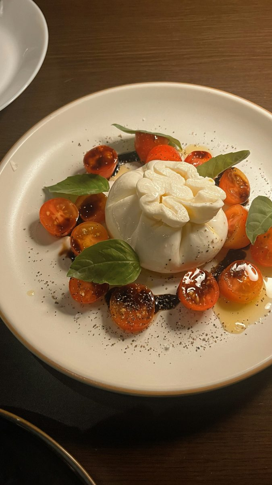
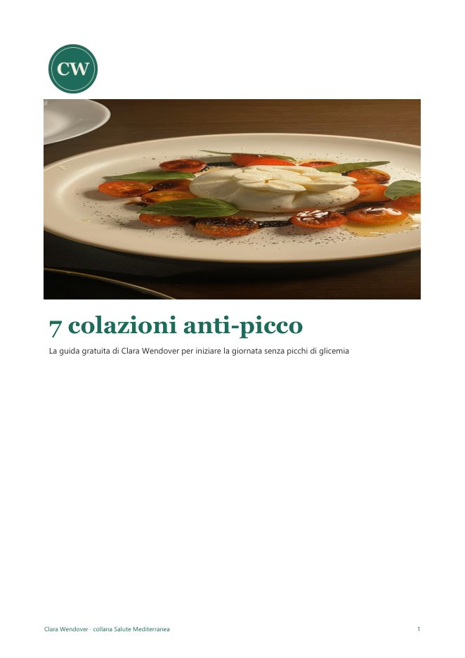
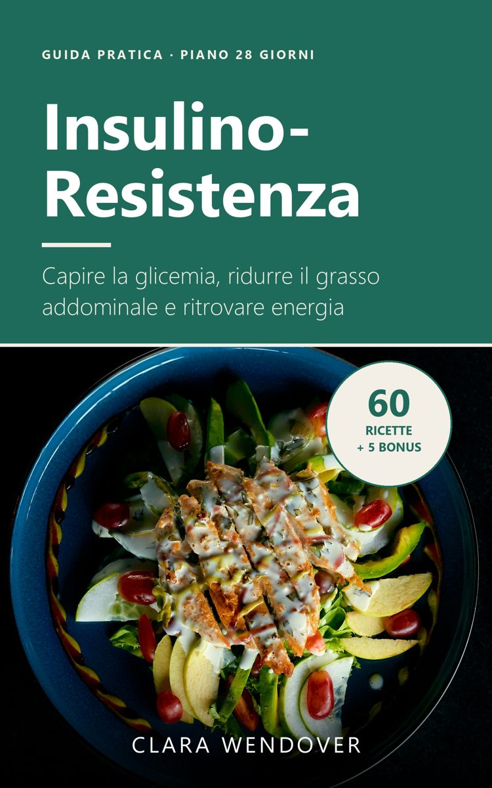
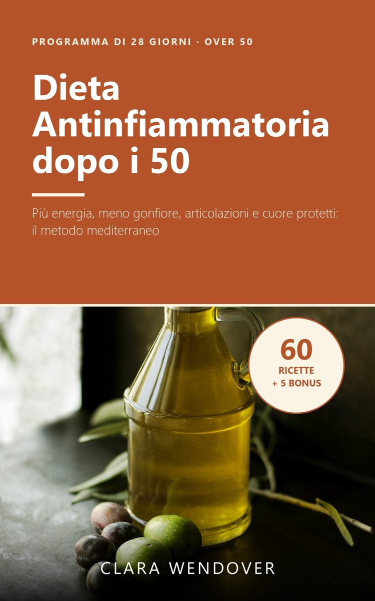
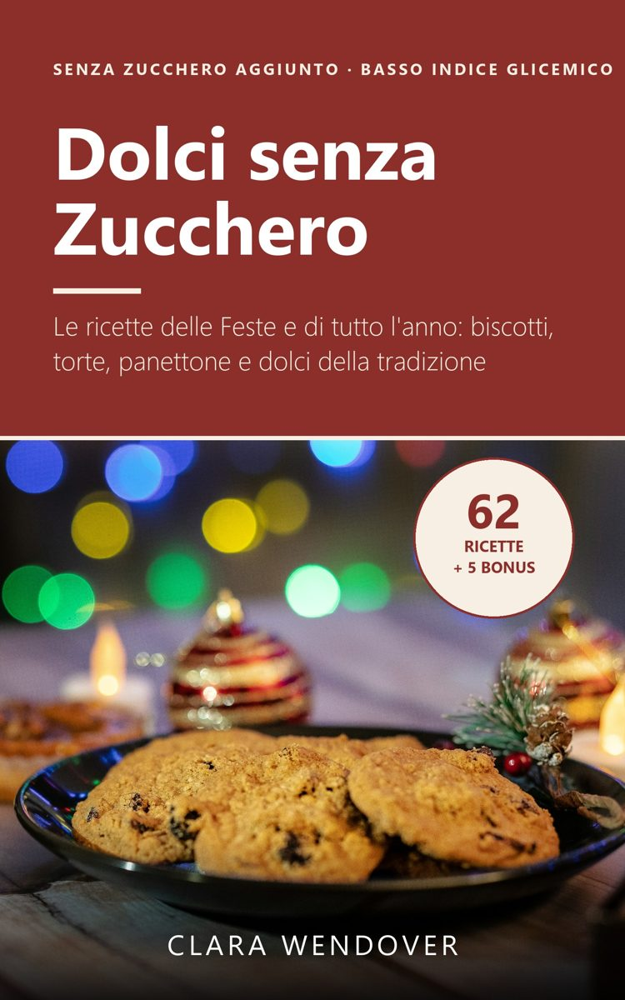
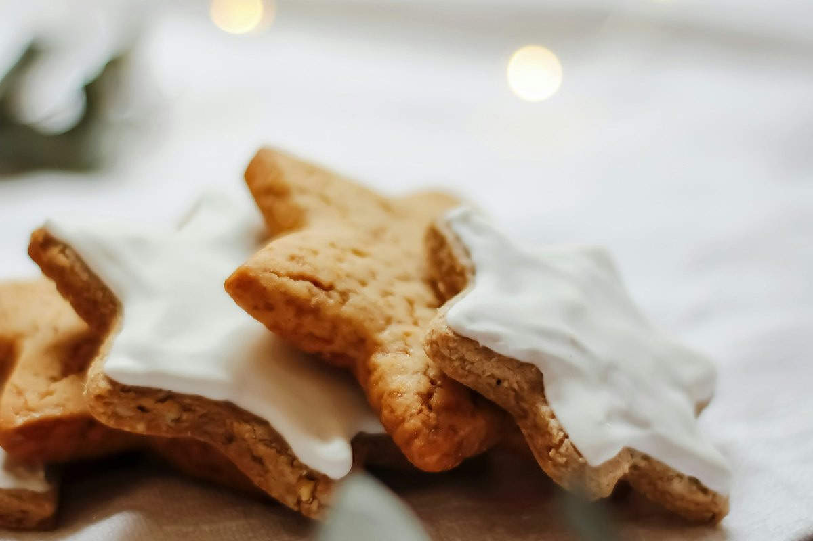

Mangiare bene ogni giorno, con il gusto del Mediterraneo
Ricette facili e consigli pratici per tenere stabile la glicemia, ridurre l'infiammazione e goderti anche i dolci, senza diete estreme.
Scarica gratis 7 colazioni anti-picco

La guida gratuita: 7 colazioni anti-picco
- 7 colazioni dolci e salate pronte in 5-10 minuti
- Le 3 regole per evitare i picchi di glicemia
- Cosa scegliere al bar e la lista della spesa della settimana
I libri della collana Salute Mediterranea

Insulino-Resistenza: la Guida Pratica
Capire la glicemia, ridurre il grasso addominale e ritrovare energia con il piano di 28 giorni e 60 ricette mediterranee.
Su Amazon
Dieta Antinfiammatoria dopo i 50 Anni
Il programma di 28 giorni per sentirti più leggero ed energico e prenderti cura di articolazioni, cuore e metabolismo.
Su Amazon
Dolci senza Zucchero
62 ricette per le Feste e per tutto l'anno: biscotti, torte, panettone e dolci della tradizione a basso indice glicemico.
Su AmazonRicette e consigli

Colazione e insulino-resistenza: 5 idee anti-picco
Cosa mangiare al mattino per avere energia fino a pranzo.

Stelle alla cannella senza zucchero
Il biscotto di Natale che piace a tutti, anche a chi controlla la glicemia.

Dieta antinfiammatoria dopo i 50 anni: cosa mettere nel piatto
Il piatto antinfiammatorio in 4 mosse semplici.

Chi è Clara Wendover
Clara Wendover scrive guide pratiche di alimentazione ispirate alla cucina mediterranea, pensate per chi vuole prendersi cura della propria salute senza diete estreme né ricette complicate. Traduce in parole semplici le indicazioni delle principali linee guida su glicemia, infiammazione e benessere dopo i 50 anni, e le trasforma in piani, liste della spesa e ricette facili.
I contenuti di questo sito hanno scopo informativo e non sostituiscono il parere del medico, del diabetologo o del dietista.